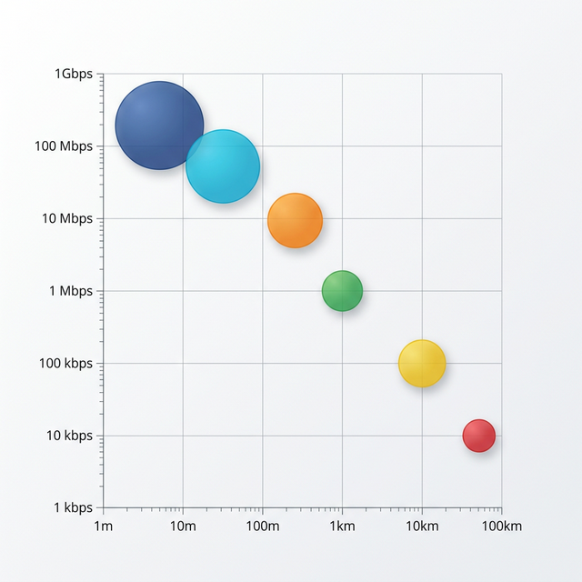
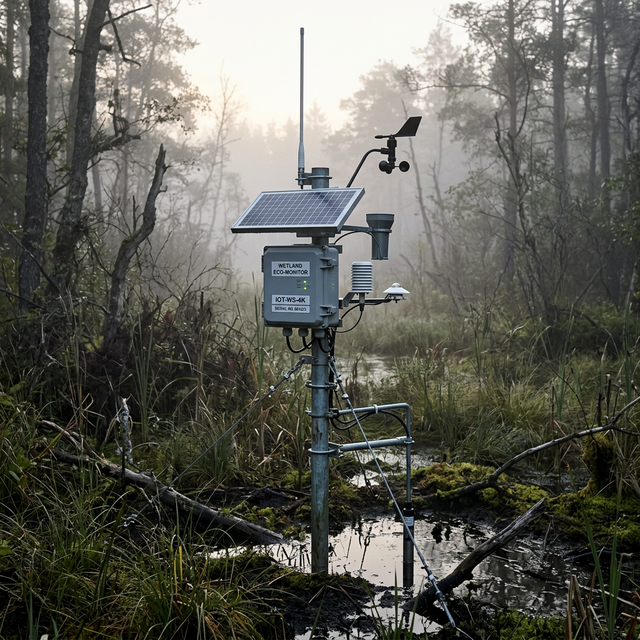
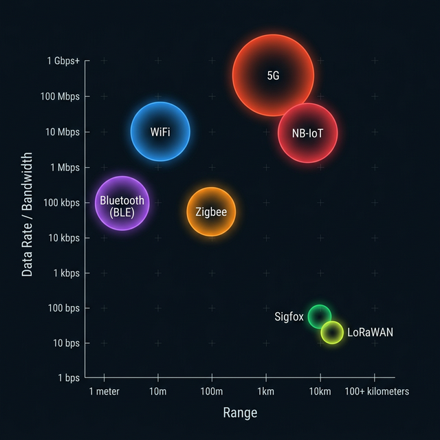

Język Rzeczy
Jak Maszyny Rozmawiają ze Sobą (Wykład 2)
prof. UPP dr hab. inż. Marek Urbaniak
Wydział Inżynierii Środowiska i Inżynierii Mechanicznej


Prolog: Fizyka, Energia i Wieża Babel
1. Problem Komunikacji M2M
W świecie Internetu Rzeczy komunikacja „Maszyna-Maszyna” (M2M) opiera się na radykalnych kompromisach, których nie znamy w świecie komputerów osobistych.
- Wyobraź sobie miliardy urządzeń.
- Nie mają gniazdka 230 V – tylko baterię wielkości monety.
- Działają w piwnicach, na pełnym morzu lub zakopane w glebie twardej jak beton.
- Jak sprawić, by w takich warunkach przesłać dane i nie opróżnić baterii w pięć minut?
Trójkąt Niemożliwy IoT
Inżynier projektujący system sieciowy musi wybrać tylko dwa z trzech parametrów:
- Zasięg (kilometry)
- Przepustowość (megabajty na sekundę)
- Czas życia na baterii (lata)

Rozdział I: Komunikacja na Wyciągnięcie Ręki
2. Wi-Fi (IEEE 802.11): Przekleństwo i Błogosławieństwo
Król Internetu w domach jest najsłabszym ogniwem IoT na bateriach.
- Zalety: Ogromna przepustowość (MB/s), powszechność infrastruktury (router w każdym współczesnym domu), natywna integracja z protokołem IP.
- Wady: Architektura Wi-Fi jest koszmarnie prądożerna – napadowe budzenie anteny i przeszukiwanie nadajników (beaconing) pochłaniają setki mA.
- Złożony proces zestawiania połączenia (handshake), zanim prześle znikomą wartość, np. samą wilgotność powietrza 45%.
- Zastosowanie w IoT: Tylko tam, gdzie istnieje stałe zasilanie – np. Smart TV, asystenci głosowi, sprzęty AGD.
Podatność na zakłócenia
Zagęszczone pasmo 2,4 GHz w budynkach mieszkalnych powoduje wzajemne zakłócenia między urządzeniami Wi-Fi, degradując jakość połączenia.
3. Bluetooth i rewolucja BLE (Low Energy)
Od ciągłego przesyłu audio do energooszczędnych opasek zdrowotnych.
- Bluetooth (Classic): Zaprojektowany dla ciągłego strumienia danych, np. sygnału audio w zestawach głośnomówiących. Moc ciągła, radio zawsze aktywne.
- Bluetooth Low Energy (BLE): Rewolucja wprowadzona w specyfikacji Bluetooth 4.0. Urządzenie śpi, błyskawicznie emituje kilka pakietów danych w milisekundy i wraca w tryb uśpienia.
- Pobór prądu spada nawet stukrotnie w porównaniu z klasycznym Bluetooth.
- Zastosowania: Opaski fitness, medycyna cyfrowa, bezprzewodowe tagi lokalizacyjne (beacony).
Różnica architektoniczna
Klasyczny Bluetooth przesyła ciągły strumień (np. audio). BLE „usypia” radio natychmiast po wysłaniu pakietu danych telemetrycznych. Bateryjka CR2032 wystarcza modułom BLE na lata pracy.
4. Zigbee i Z-Wave: Inżynieria Roju (Mesh)
Rozwiązanie problemu krótkiego zasięgu poprzez architekturę sieci kratowej.
- W tradycyjnej topologii gwiazdy sygnał czujnika trafia do centralnego routera. Problem pojawia się, gdy router oddzielony jest czterema zbrojonymi ścianami.
- Zigbee (Mesh): Urządzenia zasilane z sieci (np. inteligentne gniazdka) działają jednocześnie jako wzmacniacze (routery), odbierając pakiet od słabego czujnika bateryjnego i przekazując go dalej.
- System „samoleczący się” (self-healing) – awaria jednego węzła powoduje automatyczne znalezienie nowej trasy.
Z-Wave – pasmo sub-GHz
Z-Wave działa w paśmie 868 MHz (EU), co zapewnia znacznie lepszą penetrację ścian niż protokoły 2,4 GHz (Zigbee, Wi-Fi). Wadą jest brak jednego uniwersalnego standardu – każdy producent tworzy własne nakładki (np. Philips Hue, IKEA TRÅDFRI).
Rozdział II: Komunikacja Dalekiego Zasięgu
5. LPWAN: Telemetria na kilometry
Low Power Wide Area Network – odpowiedź na potrzeby systemów telemetrycznych działających na rozległych obszarach.
- Aby zwiększyć zasięg przy minimalnym zużyciu energii, drastycznie ograniczamy przepustowość – z megabitów na sekundę do zaledwie kilkudziesięciu bajtów na sekundę.
- Żywotność baterii: od 5 do nawet 10 lat na pojedynczym ogniwie (np. litowo-tionylowym).
- Zasięg: nawet 15–20 km w otwartym terenie.
- Służy wyłącznie do przesyłania telemetrii. Czujnik wilgotności gleby przyśle odczyt, ale kamera 4K jest całkowicie wykluczona z LPWAN.

6. Porównanie technologii radiowych
Gdzie leży fizyczna i energetyczna granica każdego standardu?
- Lewy górny róg wykresu: duża przepustowość, ale wysoki pobór energii (większy bąbel).
- Prawy dolny róg: LPWAN – zasięg poza horyzont przy zaledwie kilkudziesięciu bajtach co kwadrans i minimalnym koszcie energetycznym.

7. LoRaWAN vs NB-IoT: Prywatna sieć czy abonament?
Dwa konkurencyjne podejścia do łączności dalekiego zasięgu.
LoRa / LoRaWAN
- LoRa (warstwa fizyczna): Opatentowana modulacja Chirp Spread Spectrum (CSS), odporna na zakłócenia.
- LoRaWAN (warstwa logiczna): Otwarty protokół sieciowy. Pozwala na budowę własnych bramek w darmowym paśmie 868 MHz.
- Społeczność crowdsourcowa: The Things Network (TTN) – bezpłatne, globalne pokrycie.
- Słabsza penetracja gęstej zabudowy miejskiej.
NB-IoT / LTE-M
- Standard operatorów telekomunikacyjnych (Orange, Play, T-Mobile) – nakładka na istniejące stacje bazowe 4G.
- NB-IoT: Doskonała penetracja piwnic i podziemnych parkingów. Urządzenie stacjonarne (brak handoveru).
- LTE-M: Wyższa przepustowość, obsługa mobilności (śledzenie pojazdów) i komunikacji głosowej.
- Wadą jest stała opłata za kartę SIM i zależność od operatora.
8. Sigfox: ultralekkie wiadomości jako usługa
Model „Network as a Service” – operator globalnej sieci dostarcza łączność bez budowy własnej infrastruktury.
- Maksymalnie 140 wiadomości dziennie od pojedynczego urządzenia.
- Rozmiar ładunku (payload): zaledwie 12 bajtów na wiadomość.
- Architektura silnie asymetryczna – bardzo ograniczone wysyłanie danych w dół (downlink) do czujnika.
- Ekstremalnie tanie wdrożenia, ale narzuca poważne ograniczenia projektowe.
Rozdział III: Protokoły Warstwy Aplikacji
9. Dlaczego protokół HTTP nie pasuje do IoT?
Klasyczne środowisko webowe (REST API) jest zbyt „ciężkie” dla urządzeń o ograniczonych zasobach.
- Narzut nagłówków: Nagłówki HTTP potrafią zajmować więcej bajtów niż same dane pomiarowe (np. pojedyncza wartość „temperatura = 22,5°C”).
- Model Request-Response: Architektura synchroniczna – czujnik musi czekać na potwierdzenie od serwera, trzymając włączone, prądożerne radio.
- Brak natywnego wsparcia dla asynchroniczności i broadcastu – każde urządzenie musi indywidualnie odpytywać serwer.
10. MQTT: Lekki, binarny standard IoT
Message Queuing Telemetry Transport – architektura Publikacja/Subskrypcja (Pub/Sub).
- Czujnik nie łączy się bezpośrednio z odbiorcą danych. Wysyła wiadomość do centralnego Brokera pod określonym tematem (Topic).
- Broker filtruje i dystrybuuje wiadomości do wszystkich zainteresowanych subskrybentów.
- Urządzenia klienckie nie wiedzą o swoim wzajemnym istnieniu – znają tylko Brokera.
- Skrajnie asynchroniczny, zoptymalizowany pod kątem niestabilnych połączeń sieciowych.
Efektywność
Nagłówek wiadomości MQTT wynosi zaledwie 2 bajty, co minimalizuje czas pracy modułu radiowego i zużycie energii.
11. MQTT: Tematy, QoS i „Ostatnia Wola”
Zaawansowane mechanizmy niezawodności wbudowane w protokół.
Tematy (Topics)
- Wiadomości kategoryzowane są w logiczne, hierarchiczne drzewa:
prod/hala_B/prasa_3/temperatura - Separacja środowisk (
dev/,test/,prod/) pozwala izolować dane eksperymentalne od produkcyjnych na jednym Brokerze.
QoS i LWT
- QoS 0 – „wyślij i zapomnij” (najszybszy).
- QoS 1 – wymaga potwierdzenia (możliwe duplikaty).
- QoS 2 – pełny handshake, gwarancja dostarczenia.
- Last Will (LWT): Automatyczne powiadomienia o awarii.
12. CoAP i AMQP: Alternatywy dla specyficznych scenariuszy
CoAP (Constrained Application Protocol)
- Odpowiednik HTTP (metody GET, POST, PUT), ale oparty na bezpołączeniowym protokole UDP – szybszy, lecz bez gwarancji dostarczenia.
- Wbudowane wsparcie dla szyfrowania DTLS.
- Idealny dla prostych interakcji typu żądanie-odpowiedź na mikrokontrolerach.
AMQP (Advanced Message Queuing Protocol)
- Skomplikowany, potężny system kolejek wiadomości dla środowisk korporacyjnych i finansowych.
- Zbyt ciężki dla mikrokontrolerów – stosowany na zapleczu (backend), np. między serwerami w chmurze (RabbitMQ).
13. Podsumowanie: Dobór technologii
Wybór standardu komunikacyjnego determinuje całą architekturę systemu IoT.
| Warstwa | Technologia | Zastosowanie |
|---|---|---|
| Krótki zasięg | BLE, Zigbee, Z-Wave | Wearables, Smart Home, czujniki lokalne |
| Daleki zasięg | LoRaWAN, NB-IoT, Sigfox | Rolnictwo, monitoring środowiskowy, Smart City |
| Protokół aplikacyjny | MQTT (Pub/Sub) | Niska latencja, asynchroniczność, izolacja środowisk |
| Protokół aplikacyjny | CoAP (Req/Res) | Proste interakcje na mikrokontrolerach (UDP) |
| Protokół aplikacyjny | HTTP | Wyłącznie bramki i serwery ze stałym zasilaniem |
14. Dziękuję za uwagę
W kolejnym wykładzie omówimy
- przetwarzanie zebranych danych w chmurze (Cloud),
- zagadnienia bezpieczeństwa oraz
- zaawansowane zastosowania IoT (Smart City, Digital Twins).
Internet Rzeczy – IoT (Wykład 2)